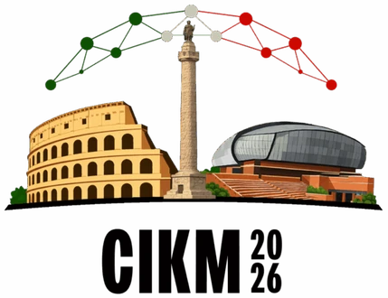
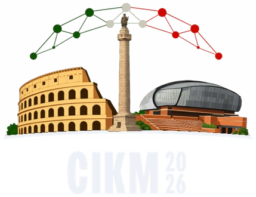

To a fellow researcher
CIKM 2026
Rome, Italy


1Jeonbuk National University 2Soongsil University 3Ulsan National Institute of Science and Technology
Multi-hop question answering aims to answer complex queries by identifying and integrating evidence distributed across multiple documents. Existing iterative RAG approaches address this task by decomposing complex questions into plans or sub-questions, followed by repeated retrieval, evidence extraction, and reasoning to accumulate the information needed for the final answer. Nevertheless, intermediate outputs produced during this iterative process are often optimized locally rather than guided by future reasoning needs, making them useful for the current iteration but suboptimal for the overall multi-hop reasoning process. We empirically investigate the potential of forward-looking guidance in iterative RAG, where the remaining planned reasoning trajectory is incorporated into each iteration. We analyze its effect across retrieval, evidence extraction, and reasoning, and find that such guidance is especially beneficial for evidence extraction and reasoning, leading to more effective intermediate outputs and consistent improvements over iterative RAG baselines.
A planning-based iterative RAG system first writes a plan of operations o1, …, on, then carries it out one operation at a time: a retriever fetches documents, an extractor keeps the relevant facts, and a reasoner writes the intermediate output. Each step sees only its own operation, so its output can be right for that step and still leave out what a later step needs (Figure 1).
Forward-looking guidance adds the remaining operations, Gi = (oi+1, …, on), to the input of a chosen stage. The planner has already written them, so nothing else changes: no extra model calls and no extra retrieval.
In the retrieval query the remaining operations hurt (−.035 EM), because they mix later information needs into the current one. After retrieval they help, most of all in extraction and reasoning together (+.087 EM), so every +FG variant below uses that setting.
We add the guidance to three planning-based methods, SelfAsk, DualRAG and STRIDE, and evaluate on 2WikiMultiHopQA, HotpotQA and MuSiQue (1,000 test questions each) with Qwen3-8B and GPT-4o-mini. EM goes up in 16 of the 18 settings, and STRIDE+FG is the strongest system overall.
Best result in bold and second best underlined, within each backbone.
The gain holds on harder questions. On MuSiQue, STRIDE+FG improves EM by about 30% relative to STRIDE for two-, three- and four-hop questions alike (Figure 4). It is also cheap: the extractor and the reasoner use 2–5% more tokens per question (Figure 5).
STRIDESTRIDE+FG
Both systems retrieve the same evidence for this HotpotQA question. STRIDE keeps only the band. STRIDE+FG, which can see that o2 asks about each person, keeps the band’s members, and that is what lets the next operation find the answer.
@inproceedings{cho2026forward,
author = {Cho, Jumin and Park, Chanjun and Na, Seung-Hoon and Song, Hyun-Je},
title = {Forward-Looking Guidance for Iterative {RAG} in Multi-Hop Question Answering},
booktitle = {Proceedings of the 35th ACM International Conference on Information and Knowledge Management},
series = {CIKM '26},
year = {2026},
location = {Rome, Italy},
publisher = {Association for Computing Machinery},
address = {New York, NY, USA},
numpages = {6},
doi = {10.1145/3799682.3840073}
}To a fellow researcher
CIKM 2026
Rome, Italy